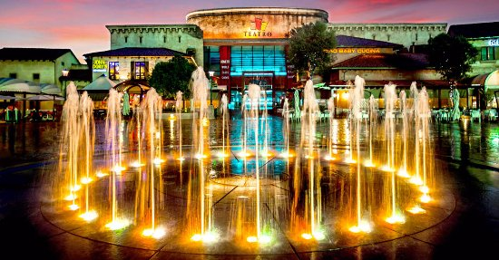
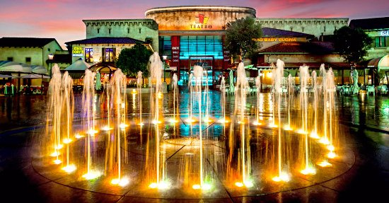

Gauteng was formed part of the old Transvaal Province after South Africa's first multiracial elections on 27 April 1994.It was initially Pretoria Witswatersrand Vereeniging(PWV) and was renamed Gauteng in December 1994. The history of this province can be traced back to the early 1800s when settlers originating from the Cape Colony defeated Cheif Mzilikazi and started establishing villages in the area.After the discovery of gold(1886), the region proceeded to become the single largest gold producer on the world and the city of Johannesburg was founded. The older city,Pretoria, was not subject to the same attension and development. Pretoria grew at a slower rate and was highly regarded due to its role in the Second Boer War. The Cullinan Diamond which is the largest diamond ever mined was mined near Pretoria in a nearby town called Cullinan(1905). Gauteng has only been properly documented since the 1800s and as a result, not much information regarding its history predating the 1800s is available. At the Sterkfontein Caves, some of the oldest fossils of hominids have been discovered, such as Mrs Ples and Little Foot. Many crucial events happened in present-day Gauteng which regards to the anti-apartheid struggle, such as the Sharpville massacre(1960), the Rivonia Trail(1963)anf the Soweto Uprising of 1976. Today, the Apartheid Museum stands testament to the struggle in Johannesburg.